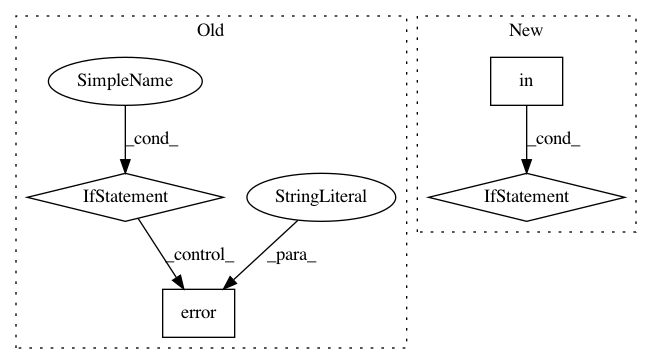

3bd37d6a657ff676c919515784cdb631c138e754,homeassistant/components/evohome/__init__.py,,setup,#Any#Any#,55
Before Change
)
except HTTPError as err:
if err.response.status_code == HTTP_BAD_REQUEST:
_LOGGER.error(
"setup(): Failed to connect with the vendor"s web servers. "
"Check your username (%s), and password are correct."
"Unable to continue. Resolve any errors and restart HA.",
evo_data["params"][CONF_USERNAME]
)
elif err.response.status_code == HTTP_SERVICE_UNAVAILABLE:
_LOGGER.error(
"setup(): Failed to connect with the vendor"s web servers. "
"The server is not contactable. Unable to continue. "
"Resolve any errors and restart HA."
)
elif err.response.status_code == HTTP_TOO_MANY_REQUESTS:
_LOGGER.error(
"setup(): Failed to connect with the vendor"s web servers. "
"You have exceeded the api rate limit. Unable to continue. "
"Wait a while (say 10 minutes) and restart HA."
)
else:
raise // We don"t expect/handle any other HTTPErrors
return False
finally: // Redact username, password as no longer needed
evo_data["params"][CONF_USERNAME] = "REDACTED"
After Change
load_platform(hass, "climate", DOMAIN, {}, hass_config)
if "dhw" in evo_data["config"][GWS][0][TCS][0]:
_LOGGER.warning(
"setup(): DHW found, but this component doesn"t support DHW."
)
@callback
def _first_update(event):
When HA has started, the hub knows to retrieve it"s first update.
pkt = {"sender": "setup()", "signal": "refresh", "to": EVO_PARENT}
In pattern: SUPERPATTERN
Frequency: 5
Non-data size: 4
Instances
Project Name: home-assistant/home-assistant
Commit Name: 3bd37d6a657ff676c919515784cdb631c138e754
Time: 2019-04-02
Author: david@bonnes.me
File Name: homeassistant/components/evohome/__init__.py
Class Name:
Method Name: setup
Project Name: home-assistant/home-assistant
Commit Name: 41f205e09d54a968f162dd36c63c3641a703b672
Time: 2016-03-24
Author: paulus@paulusschoutsen.nl
File Name: homeassistant/components/switch/template.py
Class Name: SwitchTemplate
Method Name: update
Project Name: home-assistant/home-assistant
Commit Name: 646618a25e44c98a8bba0c7cceb9dd074698adc1
Time: 2015-11-14
Author: fabian@affolter-engineering.ch
File Name: homeassistant/components/sensor/glances.py
Class Name:
Method Name: setup_platform
Project Name: home-assistant/home-assistant
Commit Name: 09d531b3b95e7943df53233d1abcb40d7e87de94
Time: 2016-08-18
Author: nkgilley@gmail.com
File Name: homeassistant/components/media_player/gpmdp.py
Class Name:
Method Name: setup_platform
Project Name: home-assistant/home-assistant
Commit Name: 2863c2d593184ba4edfda242892b50b466cedcf6
Time: 2015-03-21
Author: paulus@paulusschoutsen.nl
File Name: homeassistant/bootstrap.py
Class Name:
Method Name: setup_component